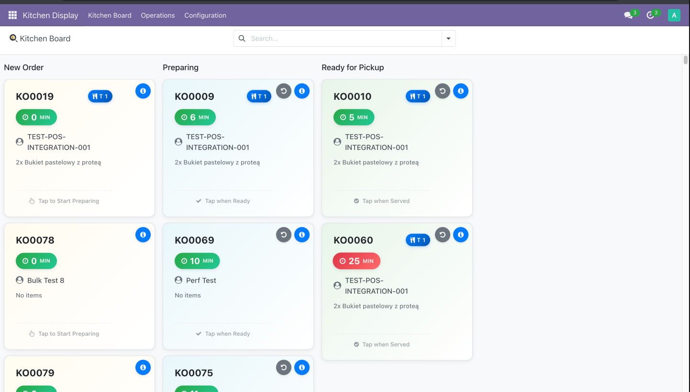
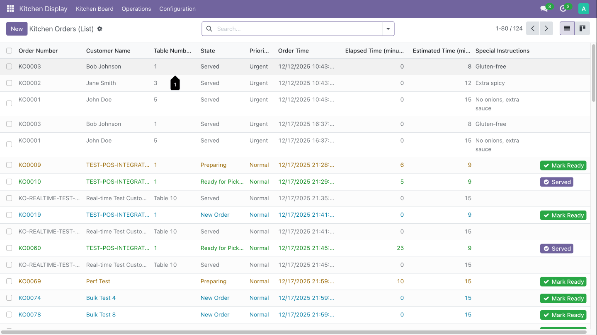
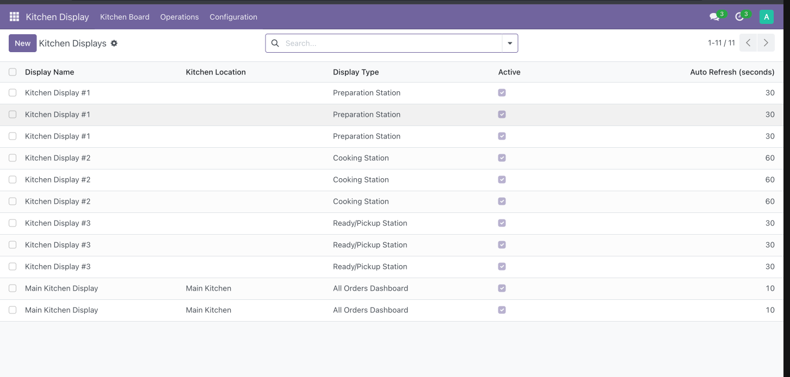

Professional Kitchen Display System for Restaurants & Food Service
Kitchen Display Pro is a comprehensive digital solution for modern restaurants, cafes, food courts, and catering businesses. Streamline your kitchen workflow, reduce order errors, and boost efficiency with real-time order management.

Clean, intuitive interface designed for busy kitchen environments
Instant synchronization with your POS system. Orders appear immediately on kitchen displays with all necessary details including customer information, table numbers, and special instructions.
Track preparation times with elapsed time indicators, monitor kitchen performance, and identify bottlenecks with built-in analytics and reporting tools.
Configure different displays for preparation, cooking, and pickup stations. Each display shows only relevant orders with customizable filtering and views.
Visual and audio alerts for new orders, timing warnings, and status changes. Configurable notification sounds ensure your team never misses an order.
Automatic priority assignment based on order type, elapsed time, and special requirements. Urgent orders are highlighted with color coding for immediate attention.
Full internationalization support with easy translation management for multi-language kitchen operations and global restaurant chains.

Kanban board view for easy order tracking
From fine dining restaurants to fast-food chains, from cafes to catering operations - our system adapts to your unique workflow and requirements.

Detailed order view with all item information
Complete view of all orders across all states. Ideal for kitchen managers and expeditors.
Shows only orders in preparation stage. Perfect for prep cooks and salad stations.
Displays orders being cooked. Optimized for grill, fryer, and main cooking stations.
Shows completed orders ready for pickup or delivery. For expediting and service staff.
Complete user guides, video tutorials, and technical documentation provided to ensure successful implementation.